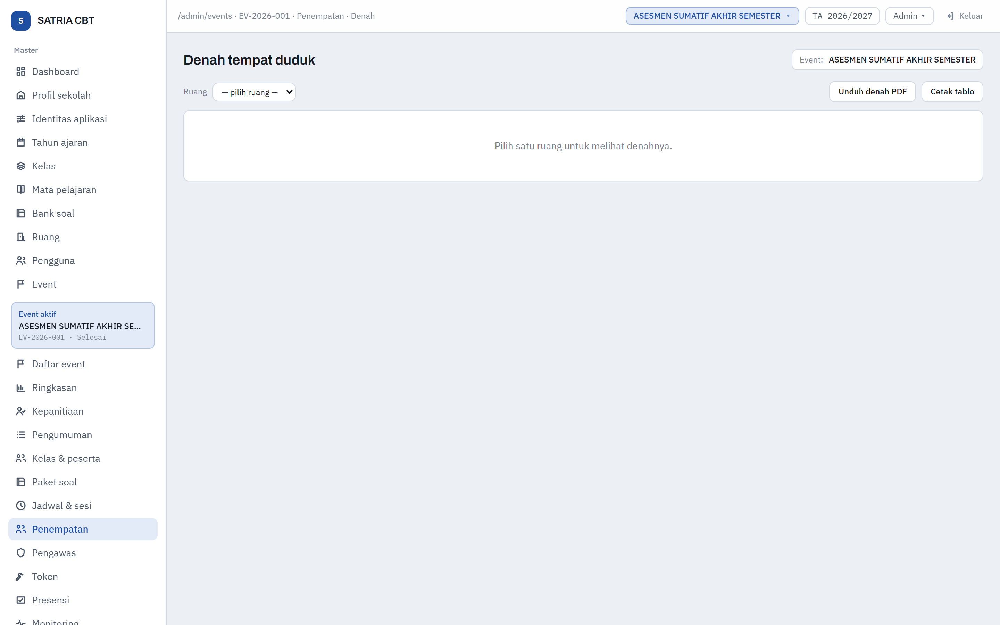
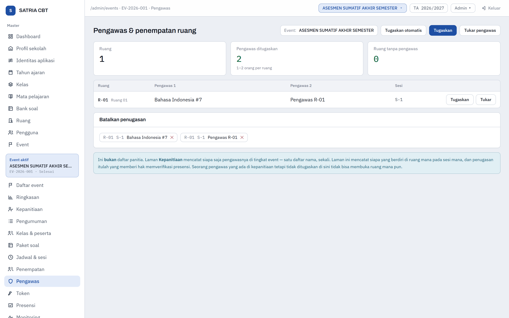
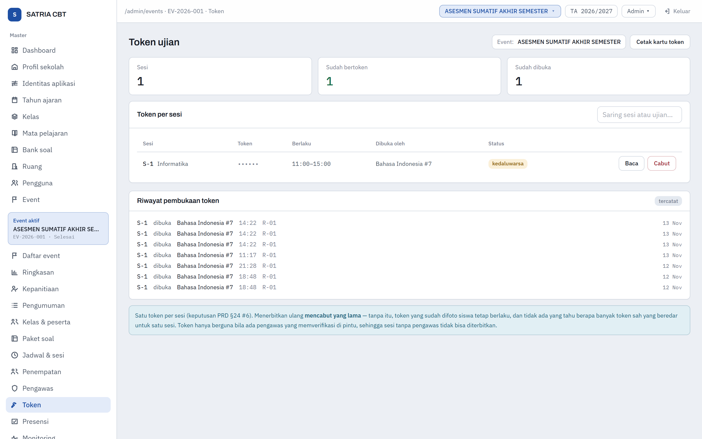
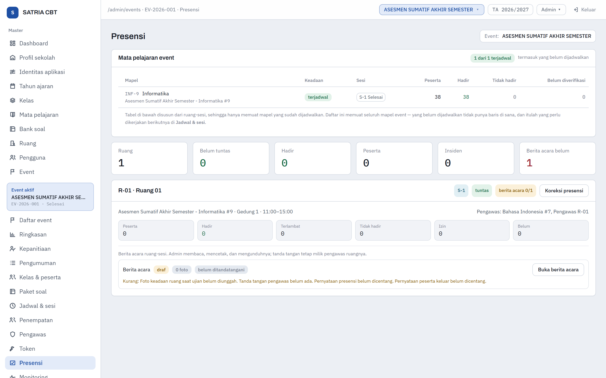

9. Hari-H
Penempatan kursi, pengawas, token, presensi, dan papan pemantauan. Bab terpanjang, karena inilah harinya.
Penempatan peserta ke ruang

Sampai langkah ini, peserta hanya terdaftar — belum punya kursi. Laman ini yang membagikannya, dan keputusan di sini dicetak lalu ditempel di pintu. Karena itu ada pratinjaunya lebih dulu.
-
Periksa Pratinjau peta ruang. Peta ini berlaku sepanjang event: sekali disebar, ia dipakai semua sesi.
-
Pilih Cara mengocok — Campur antar kelas untuk membaurkan kelas, atau Berurutan per kelas bila ingin anak satu kelas berdekatan.
-
Tekan Sebar peserta. Aplikasi membagi kursi dan menuliskan hasilnya.
-
Periksa tabel Kelayakan: tiap sesi menunjukkan berapa kursi terpakai dari kapasitas.
Denah tempat duduk

Denah tersedia sebagai halaman dan sebagai PDF untuk ditempel di meja. Isinya dihitung dari kocokan yang sudah tersimpan — membuka laman ini tidak mengocok apa pun.
Pengawas & penempatan ruang

-
Tekan Tugaskan otomatis. Aplikasi mengisi ruang yang belum punya pengawas.
-
Periksa hasilnya. Tekan Tugaskan pada baris tertentu untuk mengisi manual, atau Tukar pengawas untuk menukar dua penugasan sekaligus.
Dua pengawas per ruang adalah saran, bukan syarat. Satu pengawas sudah cukup bagi aplikasi, dan kesiapan event tidak akan menghalangi Anda karenanya — tetapi ruang dengan satu pengawas lebih sulit ditangani saat ada kejadian.
Token ujian

Token adalah angka yang dibacakan pengawas di ruang supaya siswa bisa mulai. Ia per sesi, bukan per siswa.
-
Terbitkan token untuk sesi yang akan berjalan, lalu Cetak kartu token untuk dibawa pengawas.
-
Pengawas menekan Baca saat waktunya tiba, lalu membacakannya ke ruang.
-
Bila token bocor, tekan Cabut. Siswa yang sudah masuk tetap mengerjakan; siswa yang belum tidak bisa lagi memakainya.
Presensi

Presensi diisi pengawas dari portal ruang. Laman ini untuk memeriksa dan mengoreksi, bukan untuk mengisi dari nol.
Tiga angka yang perlu diperhatikan: Hadir, Tidak hadir, dan Belum diverifikasi. Angka ketiga yang paling sering terlupakan — siswa yang tidak pernah dipanggil statusnya, dan itu berbeda dari siswa yang dinyatakan tidak hadir.
Monitoring

Papan ini menjawab siapa yang sedang mengerjakan, dan siapa yang bermasalah — selama ujian berlangsung.
Yang bisa dilakukan dari sini, dan semuanya tercatat di log aktivitas:
- Buka kunci — membuka pengerjaan yang terkunci karena pelanggaran.
- Reset — membatalkan pengerjaan terakhir dan menghapus nilainya, sehingga anak mengulang dari soal pertama.
- Hentikan — mengunci pengerjaan dengan pesan yang Anda tulis sendiri, dan pesan itulah yang dibaca siswa.
- Reset massal — melakukan reset untuk seluruh peserta satu ruang.
Tombol Lihat peserta membuka satu ruang di tab baru. Itu disengaja: papan lintas ruang disegarkan terus, dan membawanya pindah halaman berarti kehilangan tempat Anda di rekap.